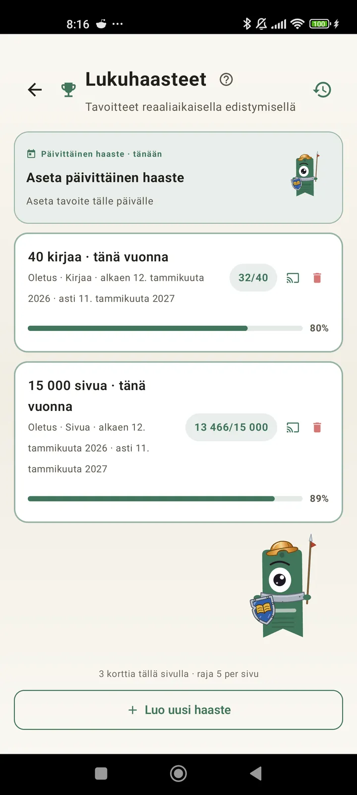

Opi tuntemaan itsesi lukijana
Haasteita, bingoja, widgetejä ja muita ominaisuuksia, joilla saat lukemisestasi kaiken irti. Uutta versiossa 3.7: haaste- ja bingowidgetit.

Lukuhaasteet
Aseta tavoitteita sivujen, putkien tai genrejen mukaan. Jopa 15 aktiivista haastetta ilmaiseksi, rajattomasti Pro-versiolla. Lisäksi muokattava päivittäinen haaste, joka ei kuulu rajaan.

Päivän haaste
Joka päivä uusi tavoite. Suorita haaste ennen keskiyötä, niin putkesi jatkuu.

Lukubingo
Joka kuukausi kaksi uutta bingoa teemaruutuineen. Täytä rivejä, sarakkeita tai koko kortti.

Viikkoyhteenveto
Joka maanantai katsaus viikkoosi: luetut sivut, kokonaisaika, putki ja vertailu edelliseen viikkoon.

Kuukausikooste
Kun kuukausi päättyy, Lecturameter tekee siitä yhteenvedon: sivut, aika, luetut kirjat, tahtisi päivä päivältä ja kuukauden kirjasi.

Bingowidget Pro
Kuukauden bingokortti aina näkyvillä: täyttämäsi ruudut ja saamasi rivit.

Kirjawidget Ilmainen
Näe lukemasi kirja suoraan aloitusnäytöllä: kansi, nimeke, kirjailija, sivut ja edistymisprosentti, aina ajan tasalla. Koon voi muuttaa sopimaan mihin haluat.
Ihan oikeasti, tää sovellus on kuin terapiaa. Luin ennen pari sivua päivässä, nyt jotain 20 sivua päivässä ja koko ajan enemmänKäyttäjän palaute sähköpostitse

Kuukausivertailu Pro
Nopea katsaus viime kuukausiisi avaamatta sovellusta. Pylväät kunkin kuukauden sivuista ja kuluva kuukausi korostettuna, joten näet yhdellä silmäyksellä, menikö tämä kuukausi paremmin vai huonommin kuin edellinen.

Haastewidget Pro
Aktiiviset haasteesi ja niiden edistyminen aloitusnäytöllä. Valitse näytettävät haasteet Haasteet-näkymästä.